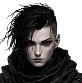

1전투 HUD 명료성
제안: 최소한의 중심 방해 + 강력한 액션 피드백
HP/자원은 화하단 고정시선 이동 최소화
핵심 스킬만 하단 중앙쿨다운/충전 직관화
보스 체력 & 기믹 상단 고정현재 상태·단계 표시
데미지/카운터는 중앙 상단짧고 강한 피드백
파티 정보는 좌측 세로상태 아이콘으로 압축
BATTLE HUD
메마른 파쇄
×5
27,842
약점 타격 +15%
24,650
1234R
TIP중앙 시야는 행동과 판정에 집중하도록 최소한의 텍스트로만 표기합니다.
2파티 로비 / 멀티플레이 구조
제안: 역할·준비 상태 가시화 + 빠른 매칭/파티 운영
역할 태그 & 밸런스 힌트탱커/딜러/서포트 시각화
준비 상태 명확화준비/미준비/점검/로딩 구분
파티 버프 & 목표 요약입장 전 전술 정보 공유
빠른 매칭 필터난이도/역할/언어/플레이 스타일
음성/텍스트 커뮤니케이션전투 전 간단한 협의 지원
PARTY LOBBY
 아인LV.26준비
아인LV.26준비
 카인LV.32준비
류LV.25준비
카인LV.32준비
류LV.25준비
 세라LV.24준비
세라LV.24준비
4인 파티 · 권장 전투력 70,000

[파티] 카인: 첫 기믹은 제가 어그로 끌겠습니다.
[파티] 세라: 버프는 2페이즈부터 풀버프할게요.
TIP준비 상태와 역할이 한눈에 보이도록 카드형 레이아웃을 유지합니다.
3보상 정산 / 기여도
제안: 기여도 기반 정산 + 보너스 정보의 즉시 인지
클리어 시간 & 등급성과 지표 즉시 제공
기여도 시각화데미지/행정/치유/유틸
개인 & 파티 보상 분리즉시 획득/우편/누적 보상 구분
보너스/연계 보상 강조버프/이벤트/업적 반영
다음 행동 유도재도전/다음 스테이지/로비
RESULT
작전 성공
★★★
S
| 플레이어 | 기여도 | 데미지 | 평가 |
|---|---|---|---|
| 아인 | 42% | 7.82M | MVP |
| 카인 | 28% | 2.34M | A |
| 류 | 22% | 3.91M | S |
| 세라 | 8% | 1.22M | A+ |
보너스 · 첫 클리어 +20%
+35%
TIP기여도와 보너스를 명확히 구분해 공정성과 만족도를 높입니다.
4제작 / 강화 / 손상 관리
제안: 단계별 흐름 분리 + 위험/비용/성공률의 명확한 커뮤니케이션
탭 기반 작업 흐름제작/강화/수리/분해 분리
핵심 정보 우선 배치성공률·비용·결과 미리보기
재료 상태 요약보유/필요/부족 즉시 확인
손상도 & 수리 비용성능 영향과 비용 명시
대량/자동 옵션반복 작업 피로 최소화
ENHANCE
메마른 갈대밭 검창
+4 » +5
+1+2+3+4+5+6+7+8
65%
강화 성공 확률
| 물리 공격력 | 312 ▸ 341 |
| 치명타 확률 | 6.5% ▸ 7.1% |
손상도
TIP성공/실패 결과와 비용을 명확히 안내해 블랙박스를 최소화합니다.